Намагничивание магнитных систем электродвигателей и электрогенераторов на постоянных магнитах
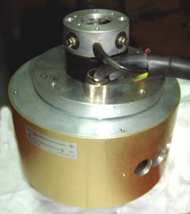
1. Введение
Магнитные системы электрических машин, собранные на постоянных магнитах (ПМ), особенно на основе железо-никель-алюминиевых сплавов (ални, алнико), а также магнитной стали, подвержены размагничиванию. Причинами размагничивания могут являться нарушения эксплуатационных режимов - например, ударные обратные токи в обмотках, перегрев, механическое воздействие (удары, вибрация), как по отдельности, так и в сочетании. При этом ухудшаются характеристики электрической машины. У электродвигателей уменьшается крутящий момент, растет потребляемый ток. У электрогенераторов снижается выходное напряжение и мощность. Для восстановления свойств электромашины необходимо произвести заново намагничивание ее магнитной системы предпочтительно до насыщения. Параметры намагничивающего поля и, соответственно, возбуждающего его тока определяются маркой ПМ [8] и особенностями конструкции магнитной системы. Намагничивание магнитных систем может осуществляться различными методами, в том числе и с помощью установок импульсного намагничивания [14].
2. Намагничивание с помощью встроенной намагничивающей обмотки
В магнитных системах некоторых электромашин на основе ПМ марки ални (ЮНД) или алнико (ЮНДК) имеется встроенная маловитковая намагничивающая обмотка, выполненная сплошным куском изолированного провода (как правило, 1 ... 3 витка на каждом магните с последовательным включением, рис. 2.1). С ее помощью и производится намагничивание магнитной системы. Желательно это делать на полностью собранной электромашине, чтобы избежать возникающей в процессе сборки частичной потери магнитных свойств ПМ с низким значением коэрцитивной силы.. Намагничивание производится серией последовательных однополярных импульсов тока достаточно большой амплитуды от емкостного накопителя энергии [3] (рис. 2.2) с соблюдением полярности включения намагничивающей обмотки. Если встроенная намагничивающая обмотка отсутствует, то можно попробовать намотать ее самостоятельно.
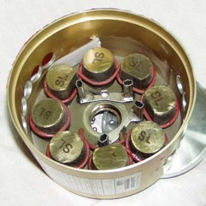 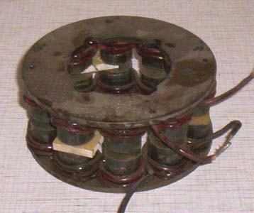
Рис. 2.1. Магнитные системы различных электродвигателей постоянного тока с плоским ротором на ПМ ални с намагничивающей обмоткой.
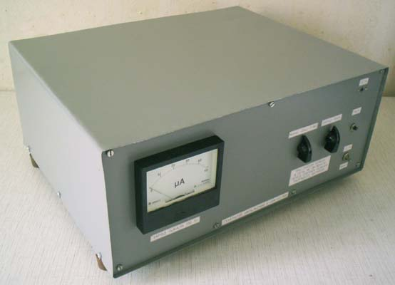
Рис. 2.2. Емкостной накопитель энергии 1 кДж 500 В [3].
3. Намагничивание с помощью внешнего электромагнита
Для намагничивания разнообразных магнето, в которых магнитная система ротора выполнена из магнитной стали (рис. 3.1 - 3.3), может использоваться внешний электромагнит (импульсный или постоянного тока).
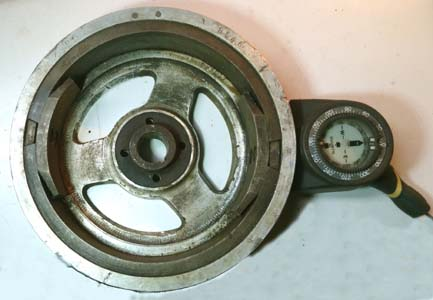
Рис. 3.1. Двухполюсный внешний ротор электрогенератора на ПМ (магнето). В качестве ПМ используется магнитная сталь.
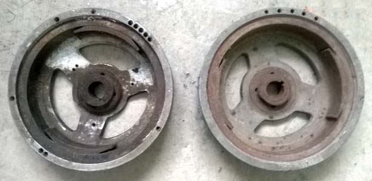
Рис. 3.2. Роторы магнето, подготовленные для намагничивания.
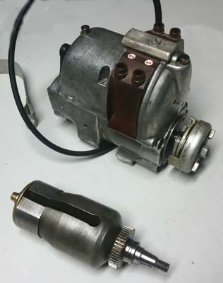
Рис. 3.3. Магнето с двухполюсным внутренним ротором. В качестве ПМ используется магнитная сталь.
Этот электромагнит может иметь конструкцию, позволяющую подбирать конфигурацию под произвольно заданную магнитную систему [12] (рис. 3.4). В качестве источника импульсного тока используется, например, емкостной накопитель энергии [3] или однополярный генератор [2] (рис. 3.5).
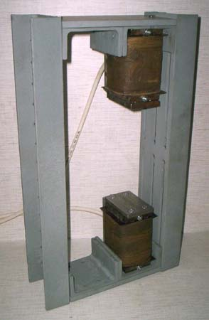
Рис. 3.4. Двухкатушечный электромагнит с изменяемой конфигурацией [12].
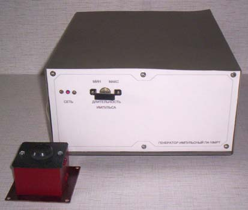
Рис. 3.5. Однополярный генератор мощных импульсов тока [2].
Примеры различных вариантов расположения катушек электромагнита и установки намагничиваемых роторов магнето показаны на рис. 3.6 - 3.8. При намагничивании необходимо соблюдать полярность расположения и подключения катушек.
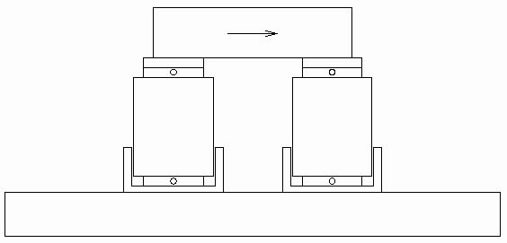
Рис. 3.6. Катушки электромагнита расположены вертикально, направление магнитных полей противоположное (например, в левой катушке - вверх по оси, в правой - вниз по оси), ротор ставится сверху.
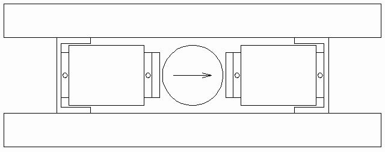
Рис. 3.7. Катушки электромагнита расположены горизонтально, магнитные поля направлены в одну сторону по оси (например, вправо), ротор малого размера устанавливается между катушками.
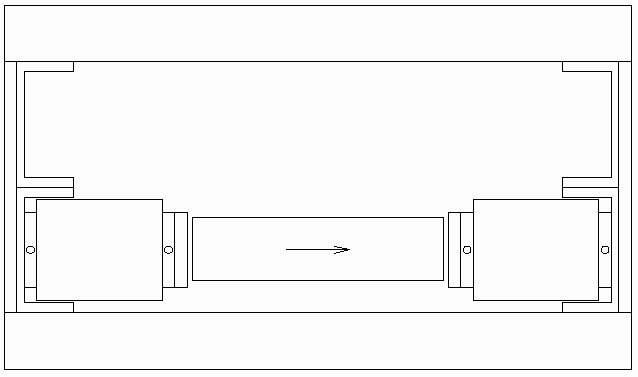
Рис. 3.8. Катушки электромагнита расположены горизонтально, магнитные поля направлены в одну сторону по оси (например, вправо), ротор большого размера устанавливается между катушками.
4. Намагничивание с помощью специализированных индукторов
Для намагничивания некоторых магнитных систем могут потребоваться специально сконструированные индукторы с импульсными источниками тока [2, 3]. Например, четырехполюсный ротор магнето снегохода (рис. 4.1) с феррит-бариевыми или феррит-стронциевыми ПМ можно намагничивать с помощью показанного на рис. 4.2 устройства [15], в котором предусмотрено изменение направления намагничивающего поля посредством переключателя. В качестве источника импульсного тока может служить либо однополярный генератор [2], либо емкостной накопитель энергии [3].
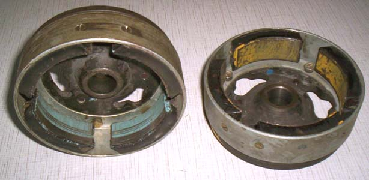
Рис. 4.1. Четырехполюсный ротор магнето снегохода на ферритовых магнитах.
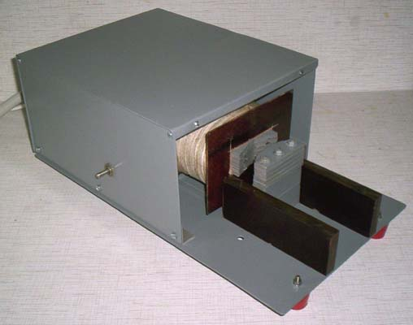
Рис. 4.2. Индуктор для пошагового разнополярного намагничивания роторов магнето снегохода [15].
Для диаметрального намагничивания двухполюсных роторов на основе редкоземельных магнитов (РЗМ: самарий-кобальт или неодим-железо-бор) может использоваться специальный импульсный индуктор [6], показанный на рис. 4.3. В качестве источника импульса тока используется емкостной накопитель энергии [3].
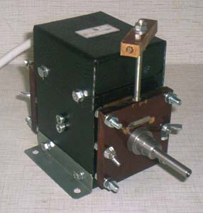
Рис. 4.3. Индуктор для диаметрального намагничивания роторов на РЗМ-магнитах [6].
Показанный на рис. 4.4, 4.5 трехфазный шаговый двигатель с зубчатым ротором, применяемый в установках для томографии, содержит одиночный ПМ состава ални, намагниченный по оси. Для его намагничивания до насыщения может использоваться индуктор в виде помещенного в стальной корпус цилиндрического соленоида [4] с отверстием (рис. 4.6, 4.7), в которое полностью входит двигатель в сборе или со снятыми фланцами и емкостной накопитель энергии [3], создающий импульс тока достаточной амплитуды.
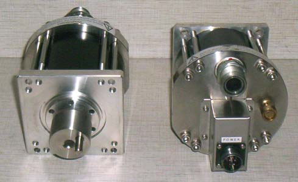
Рис. 4.4. Трехфазный шаговый двигатель для томографических установок.
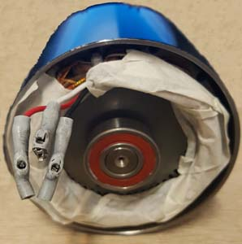
Рис. 4.5. Трехфазный шаговый двигатель с зубчатым ротором со снятыми фланцами.
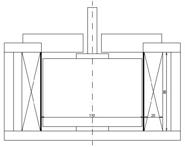
Рис. 4.6. Схема установки трехфазного шагового двигателя с зубчатым ротором в отверстие соленоида для намагничивания. Соленоид расположен в стальном корпусе и закрывается стальной крышкой.
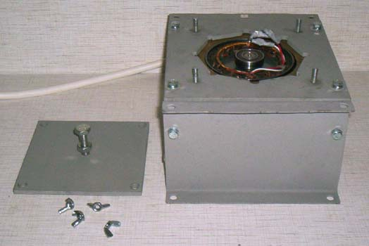
Рис. 4.7. Практическая конструкция индуктора для намагничивания трехфазных шаговых двигателей с зубчатым ротором. Электродвигатель вставляется в отверстие соленоида выступающей осью вниз и закрывается сверху стальной крышкой.
Применяемые в радиоуправляемых моделях электродвигатели с ротором на самарий-кобальтовых магнитах можно намагничивать с помощью магнитного импульсного индуктора [7], изображенного на рис. 4.8, с емкостным накопителем энергии [3] в качестве источника импульсного тока. Намагничивание можно производить в полевых условиях, используя в качестве источника энергии бортовую сеть автомобиля или аккумуляторную батарею с преобразователем напряжения =12/~220 В [9, 10].
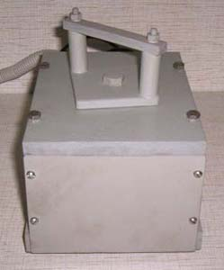
Рис. 4.8. Импульсный магнитный индуктор для намагничивания редкоземельных постоянных магнитов [7].
Для намагничивания магнитных систем миниатюрных модельных электродвигателей на основе ферритовых магнитов разработана малогабаритная установка [13] с маломощным емкостным накопителем энергии на 150 Дж [3] и индуктором (рис. 4.9). Она также может работать в полевых условиях от бортовой сети автомобиля или аккумулятора с маломощным преобразователем напряжения [9].
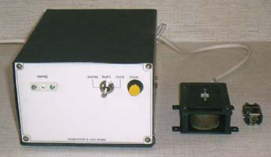
Рис. 4.9. Малогабаритная установка для намагничивания магнитных систем модельных электродвигателей на основе ферритовых постоянных магнитов [13].
Модификацией данной установки является одноблочный прибор - магнетайзер [5]. Его внешний вид показан на рис. 4.10.
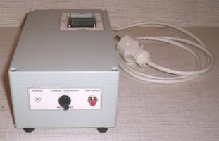
Рис. 4.10. Магнетайзер для намагничивания магнитных систем модельных электродвигателей на основе ферритовых постоянных магнитов [5].
8-полюсный импульсный индуктор [1], показанный на рис. 4.11, в комплекте с емкостным накопителем энергии 1 кДж 500 В [2] позволяет намагничивать 8-полюсные роторы электрогенераторов диаметром 80 мм шириной 17 мм с ПМ марки ални или алнико до насыщения, а также частично их размагничивать при необходимости.
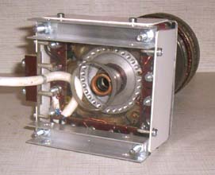
Рис. 4.11. 8-полюсный импульсный магнитный индуктор для намагничивания роторов электрогенераторов и электромоторов диаметром 80 мм шириной до 17 мм с ПМ ални или алнико [1].
5. Методика контроля качества намагничивания
Для контроля качества намагничивания магнитной системы электромашин могут использоваться следующие способы:
1. В процессе намагничивания производится измерение тока холостого хода электродвигателя с помощью амперметра. Ток холостого хода после процедуры намагничивания должен уменьшаться. Если за один раз уменьшение недостаточное, то процедура намагничивания производится повторно, пока ток холостого хода не перестает уменьшаться, либо его величина не достигает приемлемого по условиям эксплуатации значения.
2. Производится замер крутящего момента электродвигателя при заданном потребляемом токе (или заданном напряжении питания). После проведения намагничивания величина крутящего момента должна достичь максимума и соответствовать характеристикам электродвигателя.
3. Измеряется выходное напряжение электрогенератора при заданной частоте вращения. Процедура намагничивания должна обеспечить его максимальное значение, соответствующее паспортным данным электрогенератора.
4. При закороченных обмотках электромашины производится точная или приблизительная оценка тормозящего момента, требуемого для вращения ротора на заданной частоте (как правило, небольшой). Если тормозящий момент после намагничивания достигает максимума, то можно считать процедуру намагничивания успешной.
5. С помощью тесламетра [11] производится измерение магнитной индукции в рабочих зазорах электромашины. После намагничивания она должна достигать максимальных значений, соответствующих паспортным данным.
Ссылки:
15.02.2020
22.05.2021
30.03.2022
22.12.2022
17.03.2022
Альтернативные источники
энергии
Компьютеры и
Интернет
Магнитные поля
Механотронные системы
Перспективные
разработки
Электроника и
технология